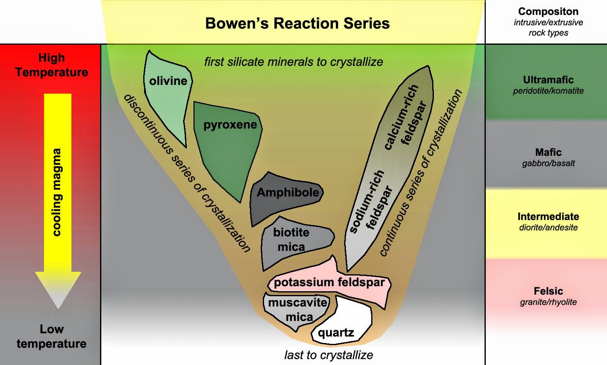

Bowen's sequence
The Bowen reaction series is a geological concept that describes the order in which minerals crystallize from cooling magma.
Schames and images to explain rock formation, transformations and composition.
The Bowen reaction series is a geological concept that describes the order in which minerals crystallize from cooling magma.
metamorphic facies are specific mineral assemblages in metamorphic rocks that form under similar pressure and temperature (P-T) conditions.
Classification chart of igneous rocks based on the mineral content. The top part is a graphical comparison of silica content and mineral content for both extrusive and igneous rocks. The bottom two rows compare rocks with the same mineral composition, but different names based on whether they formed intrusively or extrusively.
Image credit: Karla Panchuk after Steven Earle, CC BY-SA-NC